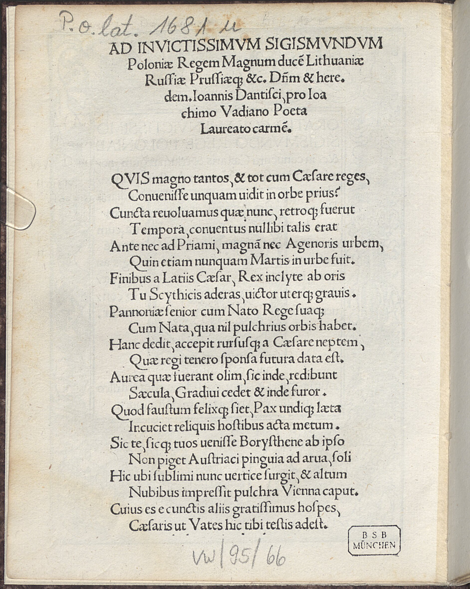
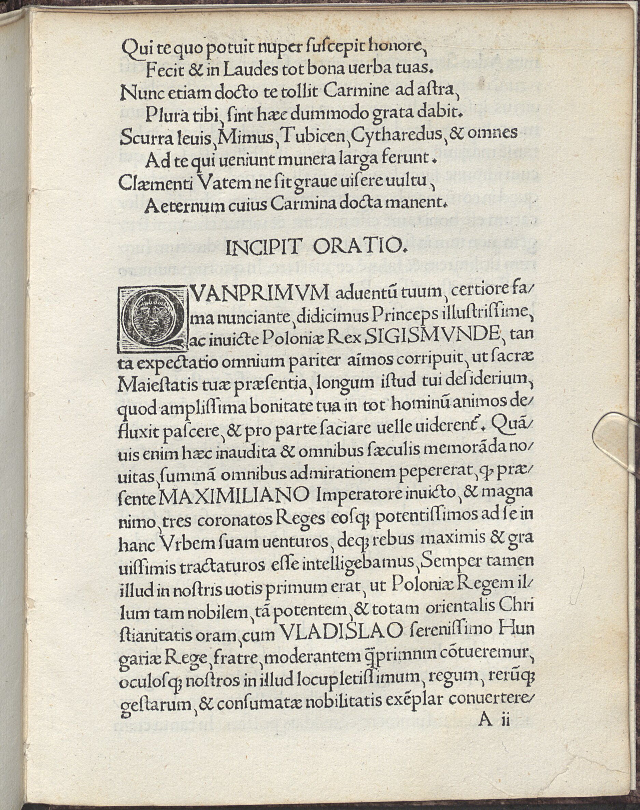

Watt 14 (Johannes Danziger)
Faksimile


Transkription
Ad Invictissimum Sigismundum Poloniae Regem Magnum ducem Lithuaniae Russiae Prussiaeque et cetera Dominum et heredem Ioannis Dantisci, pro Ioachimo Vadiano Poeta Laureato carmen.
Quis magno tantos et tot cum Caesare reges,
Convenisse umquam vidit in orbe prius?
Cuncta revolvamus quae nunc, retroque fuerunt
Tempora, conventus nullibi talis erat
Ante nec ad Priami, magnam nec Agenoris urbem,
Quin etiam numquam Martis in urbe fuit.
Finibus a Latiis Caesar, Rex inclite ab oris
Tu Scythicis aderas, victor uterque gravis.
Pannoniae senior cum Nato Rege suaque
Cum Nata, qua nil pulchrius orbis habet.
Hanc dedit, accepit rursusque a Caesare neptem,
Quae regi tenero sponsa futura data est.
Aurea quae fuerant olim, sic inde, redibunt
Saecula, Gradivi cedet et inde furor.
Quod faustum felixque siet, Pax undique laeta
Incutiet reliquis hostibus acta metum.
Sic te, sicque tuos venisse Borysthene ab ipso
Non piget Austriaci pinguia ad arva, soli
Hic ubi sublimi nunc vertice surgit, et altum
Nubibus impressit pulchra Vienna caput.
Cuius es e cunctis aliis gratissimus hospes,
Caesaris ut Vates tibi testis adest.
Qui te quo potuit nuper suscepit honore,
Fecit et in Laudes tot bona verba tuas.
Nunc etiam docto te tollit Carmine ad astra,
Plura tibi, sint haec dummodo grata dabit.
Scurra levis, Mimus, Tubicen, Citharoedus, et omnes
Ad te qui veniunt munera larga ferunt.
Clementi Vatem ne sit grave visere vultu,
Aeternum cuius Carmina docta manent.
Übersetzung
Gedicht des Johannes Danziger an den unbesiegtesten Sigismund, den König von Polen, den Großfürsten von Litauen, den Herrn und Erben von Russland, Preußen et cetera für den lorbeergekrönten Dichter Joachim Watt.
Wer hat jemals zuvor auf der Welt gesehen, dass so bedeutsame und so viele Könige mit dem Kaiser zusammengetroffen waren? Lasst uns alle Zeiten, die nun <sind> und die vorher waren, wieder betrachten, nirgendwo gab es zuvor eine solche Zusammenkunft, weder bei der großen Stadt des Priamos noch bei <jener> des Agenor, ja sogar in der Stadt des Mars gab es <das> niemals. Von den Gebieten der Latiner <war> der Kaiser und du, berühmter König, warst von den skythischen Küsten aus anwesend, ihr beide bedeutende Sieger. Der Ältere Pannoniens <kam> mit seinem Sohn, dem König, und mit seiner Tochter, das schönste, das die Erde besitzt. Diese gab er und erhielt umgekehrt vom Kaiser <dessen> Enkelin, die dem jungen König als zukünftige Braut gegeben wurde. Die Jahrhunderte, die einst golden gewesen waren, werden so von da an zurückkehren und von da an wird das Wüten des Kriegs weichen. Dies möge glücklich und begünstigt sein und überall wird der fröhliche gelebte Frieden den übrigen Feinden Furcht einflößen. So verdrießt es nicht, dass du und die Deinigen vom Dnjepr selbst zu den fruchtbaren Gefilden des österreichischen Bodens gekommen seid, hier wo das schöne Wien sich nun mit emporragendem Scheitel erhebt und sein erhabenes Haupt in die Wolken gestreckt hat. Vor allen anderen bist du dessen liebster Gast, wie des Kaisers Sänger dir bezeugt. Dieser empfing dich neulich mit größtmöglicher Ehrerbietung und bei seinem Lob sagte er so viele gute Worte auf dich. Auch jetzt erhebt er dich mit einem gelehrten Lied zu den Sternen, mehr noch wird er dir geben, wenn dies dir nur genehm ist. Ein leichtsinniger Narr, ein Mime, ein Trompeter, ein Leierspieler und alle, die zu dir kommmen, bringen reichliche Gaben. Dass es dem Gütigen nicht schwer fallen möge, den Dichter mit seinem Blick zu betrachten, dessen gelehrte Gedichte auf ewig bestehen bleiben.
Metadaten
| Titel des Gedichts: | Ad Invictissimum Sigismundum Poloniae Regem Magnum ducem Lithuaniae Russiae Prussiaeque et cetera Dominum et heredem Ioannis Dantisci, pro Ioachimo Vadiano Poeta Laureato carmen. |
| Autor der Gedichts: | Johannes Danziger (Ioannes Dantiscus) |
| Containerwerk: | Oratio coram invictissimo Sigismundo rege Poloniae, Wien 1515 |
| Autor des Containerwerks: | Joachim Watt (Joachim Vadianus) |
| Gattung des Containerwerks: | Rede, Rhetorik, Panegyrik |
| Erscheinungsjahr: | 515b |
| Verschlagwortung: | Geschichte, Exemplum, Herrscher, Versammlung, Priamos, Troja, Agenor, Rom, Sidon, Karthago, Latiner, Skythen, Heiliges Römisches Reich, Sigismund, Maximilian, Vladislav, Ungarn, Polen, Krieg, Frieden, Wiederherstellung der goldenen Zeit, Dnjepr, Österreich, Wien, Kaiser, Sänger, Lob, Panegyrik, Lied, Mime, Narr, Trompeter, Lyraspieler, Dichter, Dichtung, Gedicht, Nachruhm, Ewigkeit |